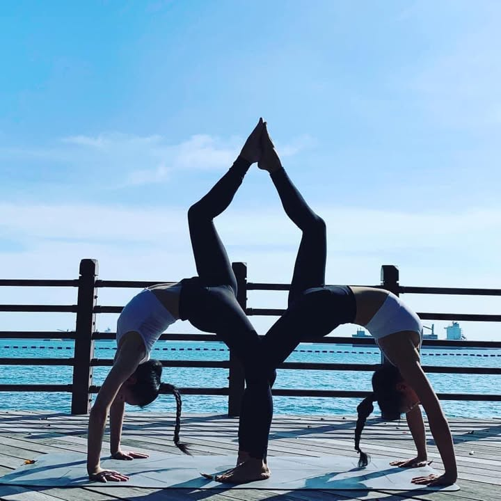
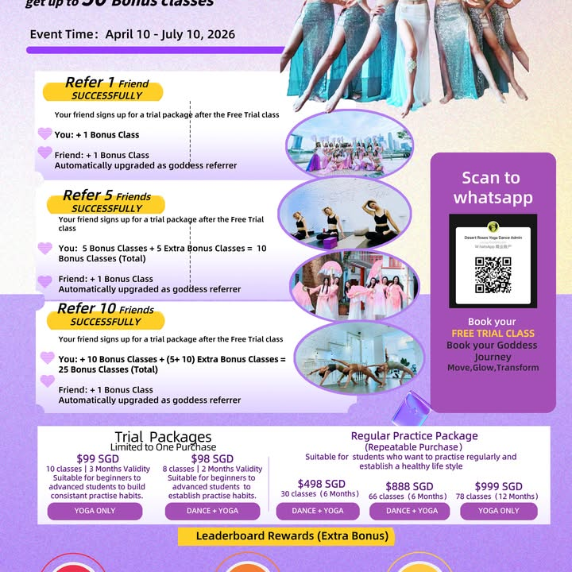
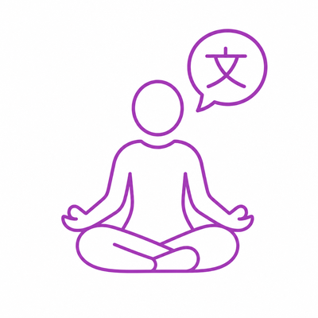
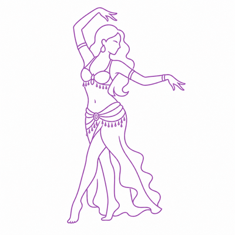
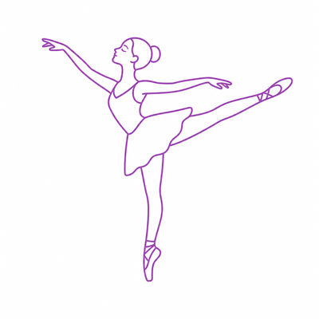
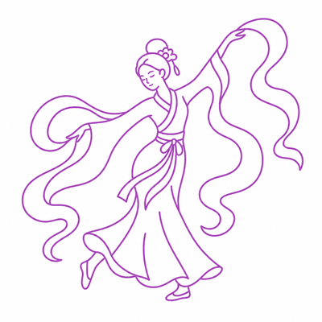
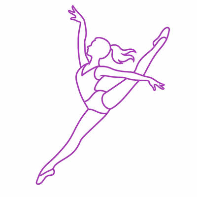
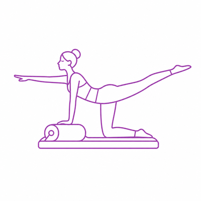
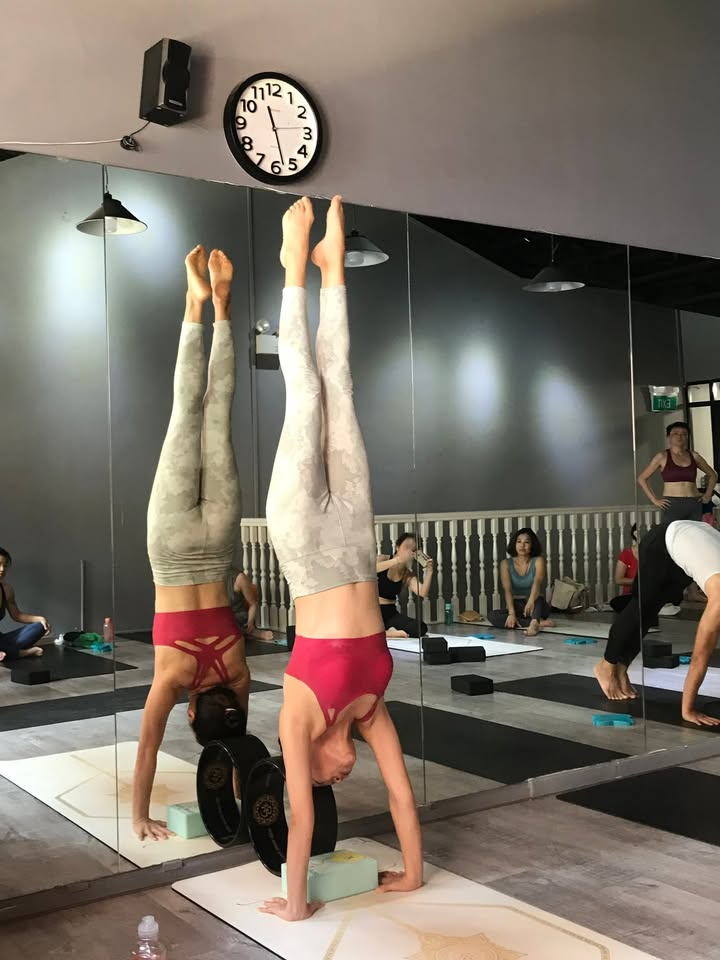
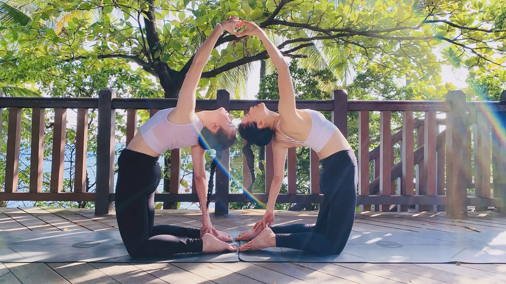

Singapore · Bilingual Studio Since 2009
Desert Roses Yoga Dance is Singapore's bilingual (English & Mandarin) yoga and dance studio — Mandarin Yoga, Bellydance, Adult Ballet, Chinese Dance, Jazz Dance and Yogalates, taught across two studios in Chinatown and Paya Lebar.
遇见最美好的自己，成为那道光
Across a year of Singapore yoga & dance content, one pattern kept surfacing: the posts and stories that got the most genuine engagement weren't about a single class — they were about a friend, a partner, a sister showing up together. Competitors mostly talk about the workout. We noticed Desert Roses' own real community already lives this — partner poses, side-by-side practice, shared milestones.
That's the gap we're leaning into: Bring Your People — a studio built around practicing with someone, not just practicing alone.


Desert Roses' real "Goddess Referral Challenge" already rewards students for bringing friends into the studio. We're building on exactly that:
It's not a gimmick — it's what the data and the studio's own community already show works.
What We Teach

Traditional yoga taught in Mandarin for our bilingual community.

High-energy bellydance fitness and performance choreography.

Beginner-friendly ballet fundamentals for adult students.

Classical and contemporary Chinese dance forms.

Upbeat jazz dance technique and routines.

A yoga + pilates fusion for strength and flexibility.
Team-building wellness sessions for companies.
Pricing
| Package | Price | Validity |
|---|---|---|
| First Class | Free | New students only |
| Yoga Package | 99 SGD / 10 classes | 3 months |
| Yoga & Dance Combo | 98 SGD / 8 classes | 2 months |
| Regular Package | 498 SGD / 30 classes | 6 months |
| Regular Package | 888 SGD / 66 classes | 6 months |
| Yoga-Only Package | 999 SGD / 78 classes | 12 months |
Two studios, one membership — Chinatown and Paya Lebar, both MRT-accessible, so practice fits your week instead of the other way around.
No leaderboard, no comparison — Yogalates and Mandarin Yoga classes are built for steady, self-paced progress at any level.
A bilingual studio community built class by class since 2009 — not a recent trend.
The Journal
What to expect from an English/Mandarin yoga class as a first-timer.
Read more →Why practicing alongside someone else helps a habit stick.
Read more →A side-by-side look at pace, intensity and what each builds.
Read more →What to look for in a studio near Chinatown, Singapore.
Read more →Practicing conveniently in the east of Singapore.
Read more →The case against leaderboard-style fitness culture.
Read more →It's not too late to start ballet as an adult.
Read more →What yoga classes actually cost across Singapore studios.
Read more →Team-building wellness sessions companies actually enjoy.
Read more →Ten questions to ask before you commit to a studio.
Read more →Frequently Asked
Yes. Desert Roses has taught classes in both English and Mandarin since 2009, making it one of Singapore's few genuinely bilingual yoga and dance studios.
Your first class is free. After that, a Yoga package is 99 SGD for 10 classes valid 3 months, and a Yoga & Dance Combo package is 98 SGD for 8 classes valid 2 months.
22B Upper Cross Street, Singapore 058334 (Chinatown), and 706A Geylang Road, Singapore 389621 (Paya Lebar).
Mandarin Yoga, Bellydance Fitness & Choreography, Adult Ballet, Chinese Dance, Jazz Dance, Yogalates, and corporate wellness workshops.
Yes — Desert Roses runs referral perks for members who bring people along, and encourages practicing together.
Click "Book Free Trial" anywhere on this page to open the live booking calendar without leaving this site, or message on WhatsApp (+65 9665 2368), WeChat (desertrosesfit), or Facebook (desertrosesbellydance).
Locations

22B Upper Cross Street, Singapore 058334

706A Geylang Road, Singapore 389621
Get In Touch
+65 9665 2368
desertrosesfit
desertrosesbellydance